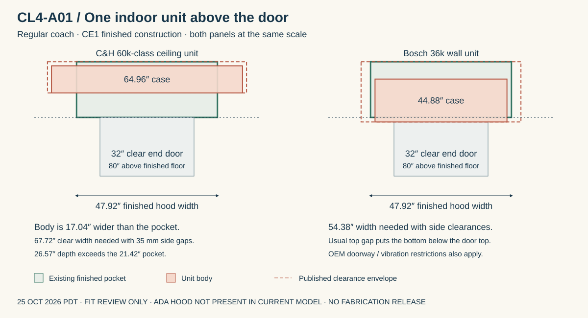

CL4 · ABOVE-DOOR EQUIPMENT REVIEW · 25 OCTOBER 2026 PDT
One per coach: the existing pocket does not fit.
Four larger single-zone mini-splits remain the preferred direction to investigate. This check found no verified single indoor unit that meets the hot-weather study load and the current above-door installation requirements.
No equipment selected. The earlier eight-unit arrangement is not a demonstrated requirement. The 35-kW generator target stays provisional. This review supersedes the earlier generic above-door fit assumption; it does not change the retained coach frame.
Check the case and the installation space

The 54″ structural hood narrows to 47.92″ after the two 2″ side-frame depths, 1″ continuous insulation and .040″ liners. Its finished ceiling is 98.96″ above the floor. The door header extends to 82″, leaving 16.96″ above the header itself. Hood-side and return finishes are consistent CE1 reservations; installed trim and supports are not modeled.
The lower main roof meets the return at approximately 85.57″ above the floor at center. A unit inside this raised pocket can therefore have its discharge, intake or filter access obstructed even when its outer case fits. A real installation needs an open air path and service space.
Accessible coach is different. The C4 model has offset 78″ end doors and no modeled raised hood. The regular-coach dimensions cannot establish fit for the fourth coach.
Three actual single-head candidates
| Matched system | Capacity / efficiency | Indoor case, W × H × D | Disposition |
|---|---|---|---|
| Cooper & Hunter CH-RSH60LCFC + CH-R60LCU-230VO | 54,000 BTU/h rated cooling 19.5 SEER2 | 64.96″ × 9.25″ × 26.57″ Ceiling orientation | Does not fit. Body is 17.04″ too wide and 5.15″ deeper than the pocket. |
| Bosch Climate 5000 BMS500-AAU036-1AHWXD + BMS500-AAS036-1CSXRD | 36,000 BTU/h rated cooling 19 SEER2 | 44.88″ × 14.61″ × 11.22″ | Installation fails. Case fits alone; normal clearance envelope needs 54.38″ width and 20.51″ above the door. |
| GREE Livo 36 R32 LIV36HP230V1R32AH + LIV36HP230V1R32AO | 33,600 BTU/h rated cooling 21 SEER2 | 42.44″ × 13.11″ × 9.69″ | Rejected for this application. Moving-base prohibition and conflicting clearance documents. |
C&H ceiling unit: its manual calls for 35 mm top and side gaps and 1,000 mm forward space. That means at least 67.72″ clear hood width, or about 73.80″ outside the structural sides with the present construction—19.80″ wider than the current frame. This is a geometric minimum, not a roof redesign. The manual also specifies at least 2.2 m room height; the main-roof center is only 2.174 m. Mobile suitability has not been established. Installation manual, printed pp. 4 and 14.
Bosch wall unit: the manual’s normal drawing uses 4.75″ side gaps, 5.9″ above and 90.55″ minimum bottom height. It describes a reduced top-gap option, with service/performance qualifications; that does not solve the width failure. It also excludes doorway locations and requires a non-vibrating mounting location. The earlier 29.5-ft throw example was not a valid installation selection. Installation manual, p. 14.
GREE wall unit: the submittal’s smaller gaps conflict with the installation manual’s 6″ top/side gaps and 98″ mounting height. More decisively, the manual excludes moving bases such as trucks. We cannot accept the favorable submittal alone. Installation manual, printed pp. 16–17.
The “60k” label does not establish summer capacity
The C&H pair is rated for 54,000 BTU/h cooling; 60,000 is its rated heating figure. Its extended table gives 41,200 BTU/h cooling at 110°F outdoors, at 1,365 CFM with 80°F dry-bulb / 67°F wet-bulb return air. Our CE1 110°F-sun study requires approximately 55,866 BTU/h to target 75°F indoors. Those return conditions differ, so this is a rejection screen rather than an exact selection calculation: the published warmer-cabin point already falls short. OEM cooling table, page 6.
| CE1 regular-coach condition | Provisional cooling load |
|---|---|
| 85°F evening | 26,455 BTU/h |
| 95°F evening | 33,841 BTU/h |
| 95°F sun | 44,788 BTU/h |
| 110°F sun | 55,866 BTU/h |
| 110°F sun + humidity stress | 67,990 BTU/h |
300 CFM outdoor air is a study assumption, not an accepted ventilation rate. 37 thermal occupants is not an approved capacity. Cooling includes a 15% allowance; glazing and operating design conditions remain unresolved. No heat recovery is credited. These are regular-coach studies, not final HVAC selections.
What this means for the design
Keep one system per coach as the preferred investigation. A single larger indoor unit will require a different mounting space or a redesigned end roof, plus a clear air path. Select against confirmed outdoor-air flow, operating temperature, sensible/latent load and manufacturer mobile-installation conditions before changing the frame. A smaller unit could suit a restricted mild-weather operating case, but that case has not been adopted.
Do not finalize the generator from these rejected units. The C&H submittal’s 5,625 W nominal cooling input is an operating point; circuit ampacity and seasonal SEER2 are not generator load estimates. Use actual selected-system electrical performance, ventilation loads and generator derating before confirming 35 kW.
Primary sources and reproducible record
- C&H product and document index · matched submittal · 2025 efficiency leaflet · installation · extended cooling
- Bosch 36k submittal · April 2026 installation manual
- GREE Livo 36 submittal · installation manual
- Geometry audit and source hashes · Equipment / fit data · Reproducible source
- CE1 load assumptions and sensitivities
Manufacturer documents reviewed 25 October 2026 PDT. No supplier response or rail-service acceptance is implied. No CAD frame, mounting rail, drain, refrigerant line, roof fan or electrical connection is released by this review.